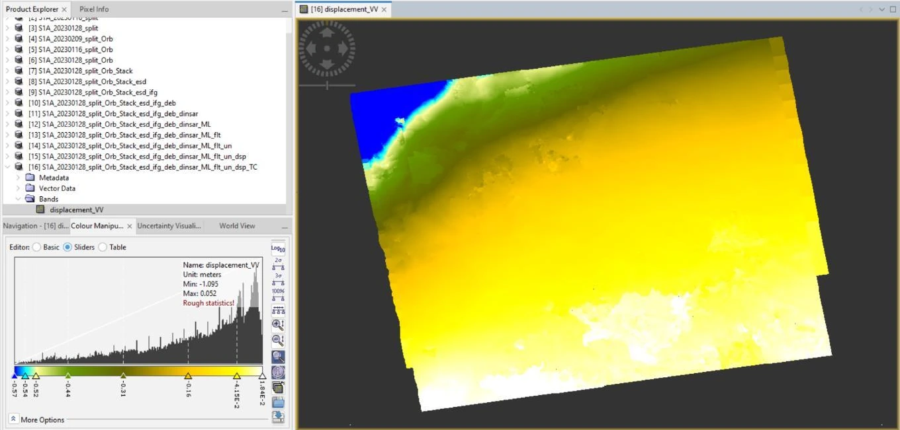
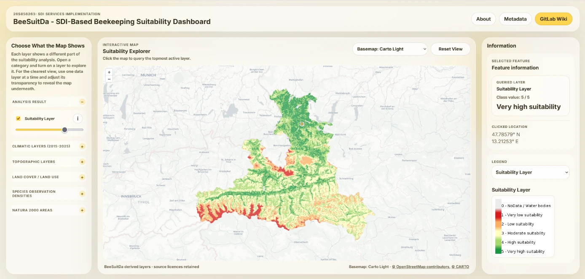
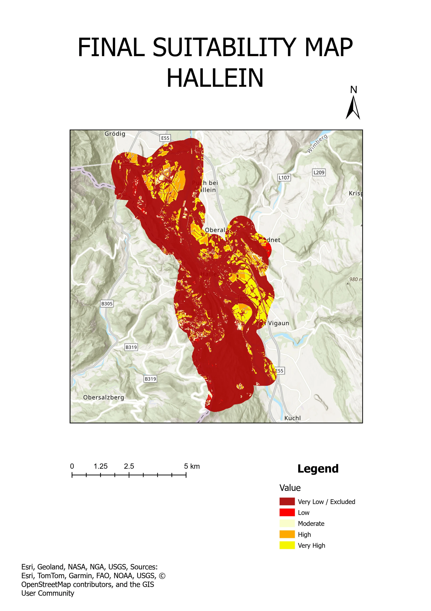

Skip to content
NB
About me
Projects
Certificates
Contact
Projects

Earthquake deformation — Turkey

BeeSuitDa — Beekeeping suitability

Solar site suitability — Hallein
Geodetic survey — Jelenovac Park
Traverse survey
Detailed levelling — Mimara Museum area
Precise levelling
←
→
Close ×
←
→